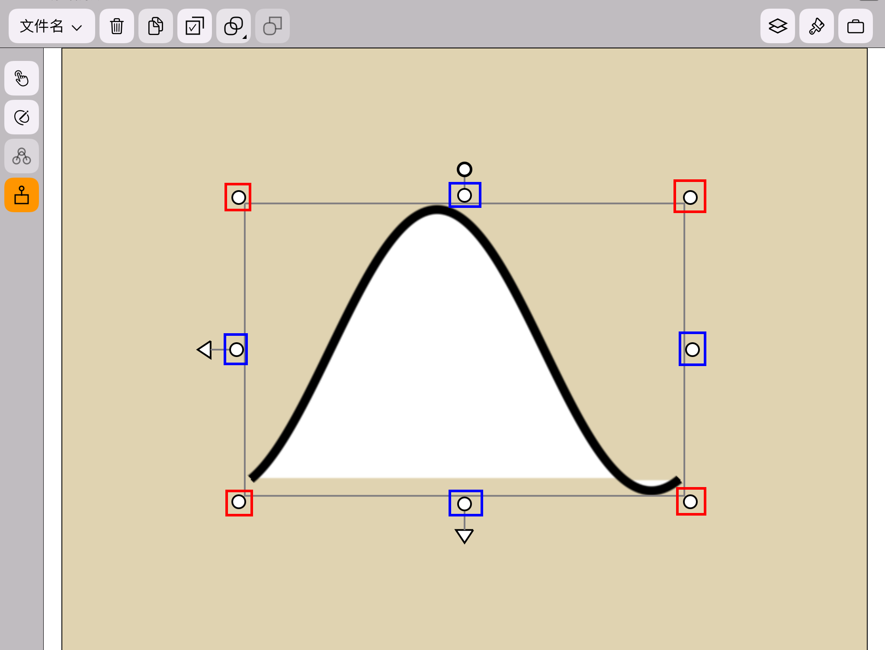
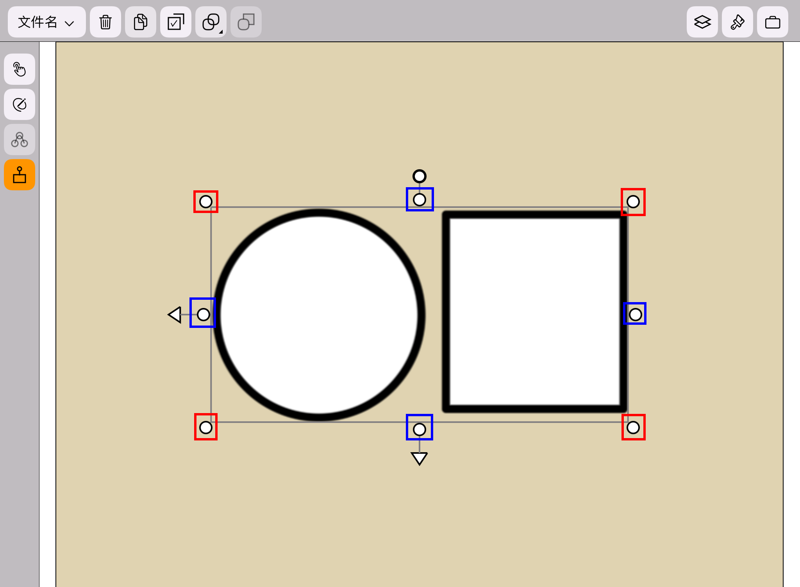
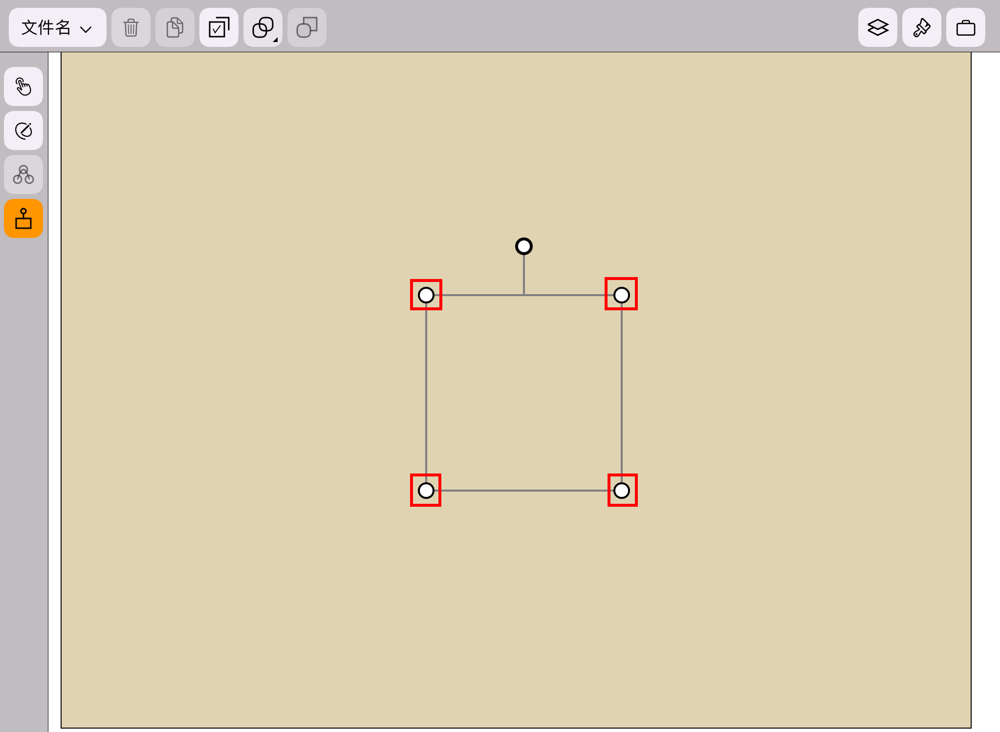
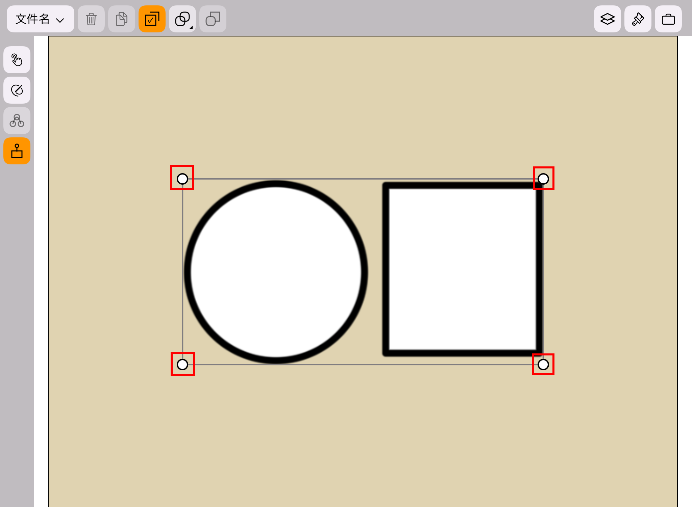

缩放
应用版本：1.07
开启空间变换模式。
当一个图形被选中时：
拖动空间变换控件四个角上的圆形（如下图红色方框内所示），可以等比例缩放图形。
拖动空间变换控件四条边上的圆形（如下图蓝色方框内所示），可以沿单一方向缩放图形。

当一个组被选中时：
拖动空间变换控件四个角上的圆形（如下图红色方框内所示），可以等比例缩放组。
拖动空间变换控件四条边上的圆形（如下图蓝色方框内所示），可以沿单一方向缩放组。

当画布被选中时，拖动空间控件四个角上的圆形（如下图红色方框内所示），可以等比例缩放画布。

当多个图形或组被选中时，拖动空间变换控件四个角上的圆形（如下图红色方框内所示），可以缩放多选。
